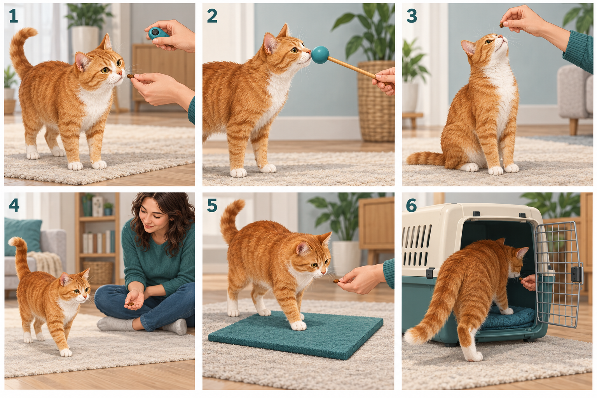

Today’s exact target
Do these steps
A short session
Stop early if your cat loses interest.
YOUR DAILY PRACTICE
30 practice days, at your cat’s pace. Repeat a day as often as needed. Learning is not a race.
Click once at the moment your cat gets it right. Give a tiny reward immediately after every click.
Stop early if your cat loses interest.
If the sound scares them, stop and use a soft “yes” followed by food instead.
Example: your cat’s nose touches the target. Click as the nose makes contact, then feed. The click tells them which moment earned the reward.
Don’t click to call them over. Don’t click repeatedly. An accidental click still gets a reward.
Try one 1–3 minute session a day. A second short session is optional if your cat is eager. Start with 3–5 attempts, not a long drill.
The timer is a limit, not a goal. End sooner if needed. Never skip meals to make your cat train.
Stop for hiding, flattened ears, a lashing tail, growling, or walking away. No pushing their bottom down, grabbing paws, shouting, or spraying water. Training should feel like a game.
Use tiny rewards within their daily food allowance. For a cat with pain, illness, or a special diet, ask your vet about suitable activities and rewards.
Match each number to the picture below. These are illustrations; use the written steps for the exact timing.

Let them go. Try later when they are awake and relaxed. Offer one tiny reward first. If they don’t want it, skip training. Make the next session shorter.
Stop using it. Use a softly spoken “yes”, followed immediately by a reward. Teach that sound with Day 2. Never click near their ears.
Wait a few seconds, then make the task easier. Move the target closer, shorten the distance, or go back to the last successful step. Don’t repeat the word louder or over and over.
Keep food in a bowl beside you and deliver it on the floor. For targeting, reward an approach before a bite, and end if they get overexcited. Don’t hold food between fingers if they snap at it.
Once a skill is easy, move the food to your other hand or a nearby bowl. Keep the familiar hand signal. Click the successful action, then get the reward. Reduce visible food slowly; keep rewarding.
For this planner, a useful starting rule is four relaxed successes out of five attempts across two short sessions. This is a suggested checkpoint, not a deadline. If you need to help more, repeat the day.
Those need their own assessment. Don’t punish accidents or use this trick plan to treat aggression. New toilet changes, pain, or sudden behavior changes deserve a vet check; ask for qualified behavior help when needed.
This guide shows your saved practice day when you open it. It does not send notifications. Progress and notes stay in this browser on this device; they don’t sync through GitHub.